FAMS 全系统端到端自动化验收报告
生成时间：2026-06-29T10:55:27.072Z。本报告基于原始 PRD、目标架构文档、代码实现、自动化命令、API 交叉验证和无头浏览器截图生成。报告不构成投资建议，不将研究验证包装为正式交易验证。
总体结论
通过
Research Ready
yes
Manual Draft Ready
yes_if_gate_evidence_ready
Formal Trading
false
Auto Trade
false
目标架构与当前实现
目标架构是“数据源与证据层 → 策略/回测/验证层 → Operation 审计层 → 前端研究体验层 → 交易 Gate”。当前实现已经覆盖红利低波研究页、组合回测页、任务中心 artifact、人工计划草案和交易 gate；仍需对正式 total-return benchmark、免费数据最新性、正式交易验证做持续审计。
{
"target": [
"数据源与证据层：免费数据源/Tushare 升级源、行情、分红、行业龙头、交易约束、evidenceRefs。",
"策略与验证层：红利低波、组合回测、滚动策略、validation retest、failure taxonomy。",
"Operation 审计层：所有重任务落 Operation 与 artifact，支持任务中心追溯。",
"前端体验层：独立红利低波、组合回测、任务中心、持仓和告警路径。",
"交易 Gate：研究/观察/计划草案与正式交易动作隔离，AUTO_TRADE 禁止。"
],
"current": [
"已实现红利低波独立菜单、候选池、筛选排序、买卖区间、滚动回测和人工草案 gate。",
"已实现组合策略多曲线回测、永久组合/全天候代理 ETF 路径、Operation artifact。",
"已实现生产/交易 gate 合同测试；正式自动交易仍未开放。",
"仍需持续审计正式 total-return benchmark、免费数据最新性与文档漂移。"
]
}
PRD 功能覆盖矩阵
| 功能点 | 状态 | 证据 |
|---|---|---|
| 红利低波独立菜单和研究模式说明 | 通过 | 前端截图 /dividend-low-vol |
| 候选池指标、筛选、排序和数据完整性展示 | 通过 | 截图 + /api/v1/strategy/dividend-low-vol/candidates |
| 买入/卖出观察区间和滚动策略展示 | 通过 | 前端截图；若未先运行区间生成，报告为 blocked |
| 人工计划草案与交易 gate | 通过 | 前端截图 + test:trade-action-readiness |
| 组合策略多曲线回测 | 通过 | 前端截图 + test:portfolio-backtest-api-contract |
| 任务中心产物追溯 | 通过 | 前端截图 /operations |
| 正式交易和自动交易禁止 | 通过 | 命令 + API prohibitedActions |
| FIVD-R 统一分析入口和交易阻断可见 | 通过 | 截图 /analysis?section=fivdr + test:fivd-r-core |
| 跨设备基础可读性截图 | 通过 | Playwright desktop/tablet/mobile screenshots |
测试覆盖矩阵
| 测试项 | 状态 | 证据 |
|---|---|---|
| TypeScript 编译 | 通过 | node node_modules/typescript/bin/tsc (5969ms) |
| SQLite 运行时健康 | 通过 | npm run check:sqlite-health (43348ms) |
| 红利低波 API 合同 | 通过 | npm run test:dividend-low-vol-api (48203ms) |
| 红利低波审计包 | 通过 | npm run test:dividend-low-vol-audit-package (59009ms) |
| 红利低波滚动回测 | 通过 | npm run test:dividend-low-vol-rolling-backtest (731ms) |
| 红利低波验证 retest | 通过 | npm run test:dividend-low-vol-validation-retest (704ms) |
| 红利低波前端静态合同 | 通过 | npm run test:dividend-low-vol-frontend-runtime (591ms) |
| FIVD-R 核心合同 | 通过 | npm run test:fivd-r-core (1993ms) |
| FIVD-R 交易 gate 合同 | 通过 | npm run test:fivd-r-trade-gate-contract (2012ms) |
| 组合策略回测服务 | 通过 | npm run test:portfolio-strategy-backtest (5845ms) |
| 组合回测 API 与 artifact 合同 | 通过 | npm run test:portfolio-backtest-api-contract (17115ms) |
| 生产就绪 gate | 通过 | npm run test:production-readiness (1938ms) |
| 交易动作 gate | 通过 | npm run test:trade-action-readiness (1907ms) |
| 前端构建 | 通过 | npm run build (43719ms) |
文档一致性审计
| 检查项 | 状态 | 文档 | 备注 |
|---|---|---|---|
| PRD 明确研究/观察边界 | 通过 | DIVIDEND_LOW_VOL_PRD.md | |
| PRD 覆盖人工交易计划草案路径 | 通过 | DIVIDEND_LOW_VOL_PRD.md | |
| 组合回测文档覆盖多组合曲线目标 | 通过 | PORTFOLIO_STRATEGY_BACKTEST_PLAN.md | |
| Drawio 覆盖当前架构与目标架构差异 | 通过 | target-architecture-gap.drawio | |
| 组合回测文档仍可能保留 ETF proxy 阻塞旧描述 | 通过 | PORTFOLIO_STRATEGY_BACKTEST_PLAN.md | 若自动化测试证明 permanent/all_weather 已完成，此项应作为文档漂移修复，而不是功能失败。 |
| 架构文档覆盖交易 gate 与审计边界 | 通过 | TARGET_ARCHITECTURE_GAP.md / ARCHITECTURE_CURRENT_TARGET.md |
代码检视矩阵
该矩阵只检查代码中是否存在与 PRD 功能对应的入口、页面、接口和交易边界；它不是视觉验收，视觉结果以下方截图为准。
| 检查项 | 状态 | 证据文件 |
|---|---|---|
| 前端存在红利低波独立路由 | 通过 | frontend/src/App.tsx / frontend/src/components/layout/AppLayout.tsx |
| 前端存在组合策略回测入口 | 通过 | frontend/src/App.tsx / frontend/src/components/layout/AppLayout.tsx |
| 前端存在任务中心追溯入口 | 通过 | frontend/src/App.tsx / frontend/src/components/layout/AppLayout.tsx |
| 红利低波页面明确非交易指令和 AUTO_TRADE 禁止 | 通过 | frontend/src/pages/DividendLowVol.tsx |
| 红利低波页面包含筛选排序、买卖观察区间和滚动回测 | 通过 | frontend/src/pages/DividendLowVol.tsx |
| 组合回测页面展示数据等级、模型有效性、草案和正式交易锁 | 通过 | frontend/src/pages/Backtest.tsx |
| 分析建议页包含 FIVD-R 统一分析与交易阻断说明 | 通过 | frontend/src/pages/Analysis.tsx |
| 后端暴露红利低波候选、交易区间、回测和 FIVD-R adapter | 通过 | backend/src/routes/strategy.ts |
| 后端暴露组合回测 templates/run 与正式交易解锁审计产物 | 通过 | backend/src/index.ts / backend/src/routes/portfolioBacktest.ts |
| 后端 Operation 支持 artifact 读取 | 通过 | backend/src/routes/operation.ts |
| 前端服务封装 FIVD-R 与红利低波接口 | 通过 | frontend/src/services/analysisService.ts |
用户场景截图证据
总览与侧边栏
通过证明左侧菜单和系统入口可见。
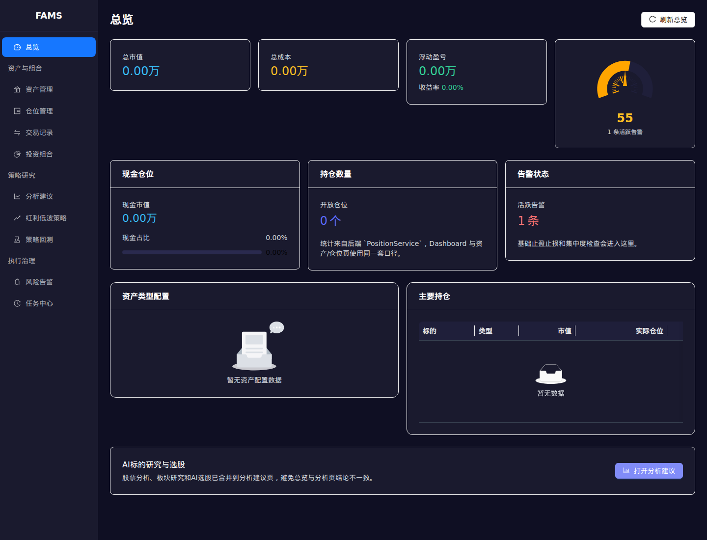
FIVD-R 分析建议
通过证明 FIVD-R 统一分析入口、研究/交易阻断语义可见。
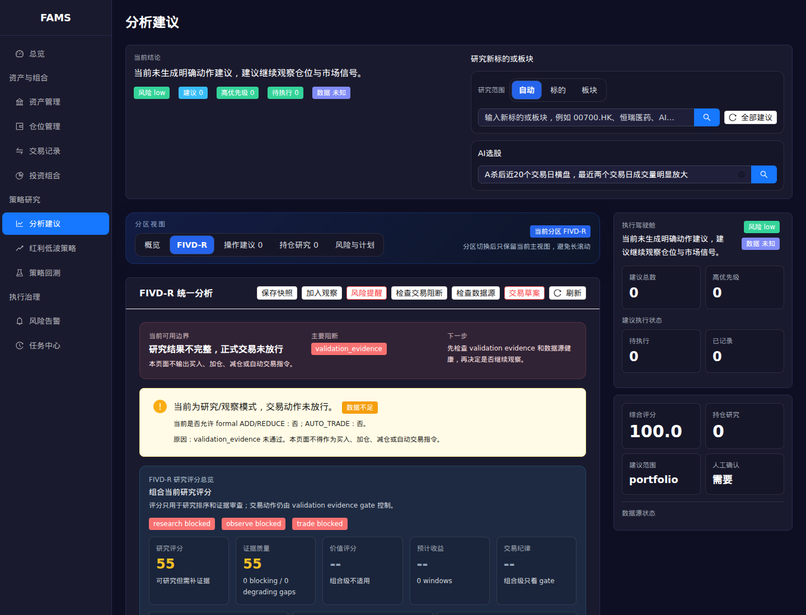
红利低波策略页
通过独立菜单页、研究模式 banner、禁止交易动作。
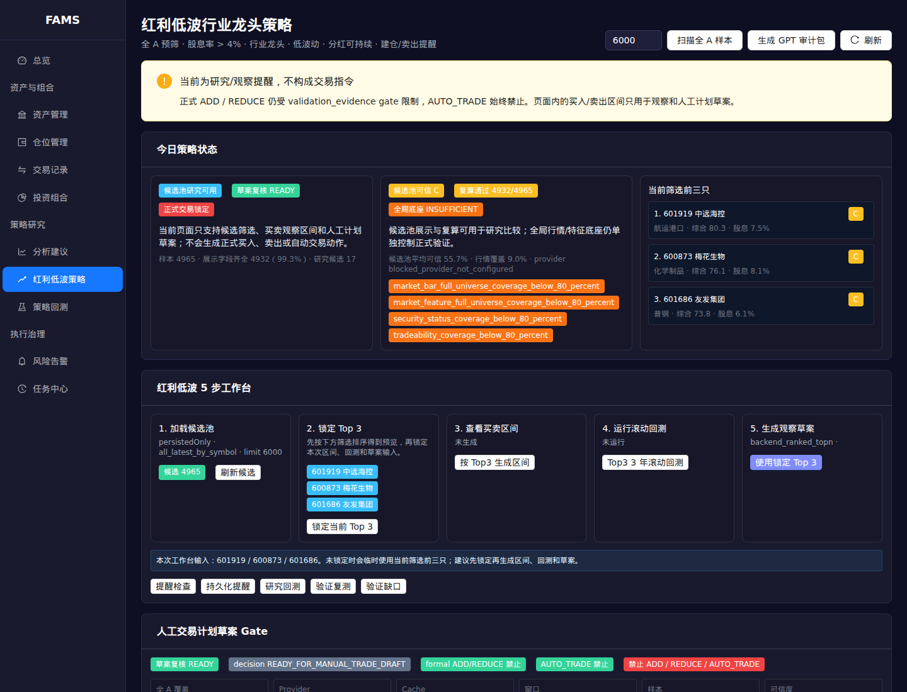
红利低波筛选与指标
通过候选池筛选、排序和指标说明区域。
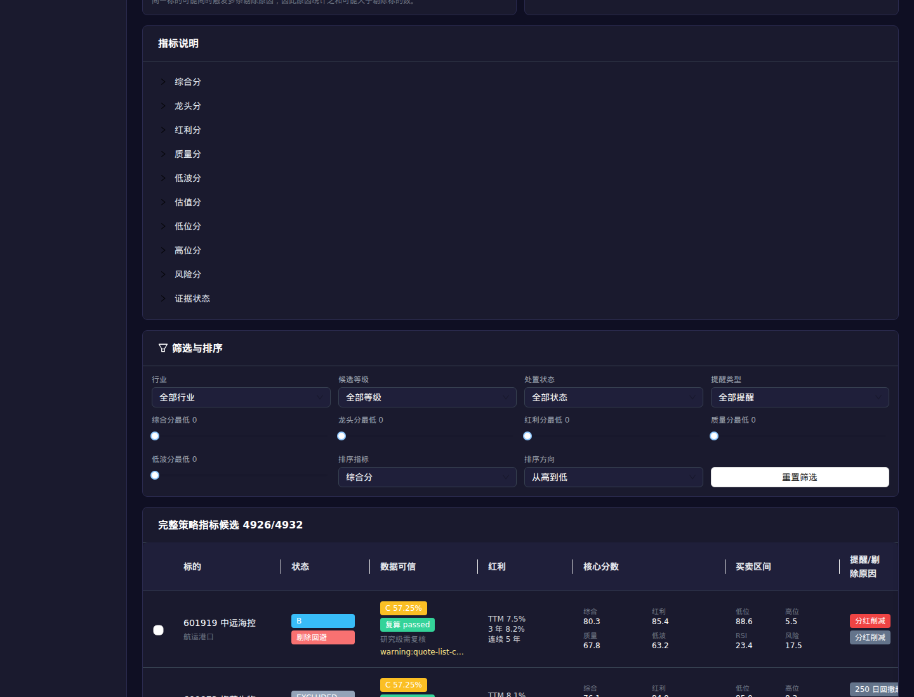
红利低波买卖区间
通过买入/卖出观察区间、滚动回测和区间免责声明。
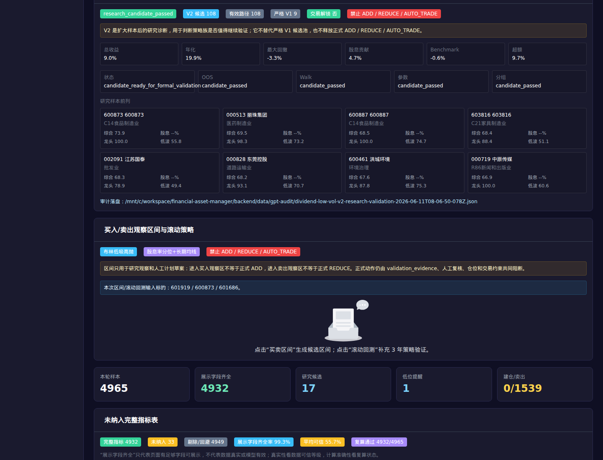
人工计划草案 Gate
通过人工计划草案 readiness、Top3 草案和交易 gate。
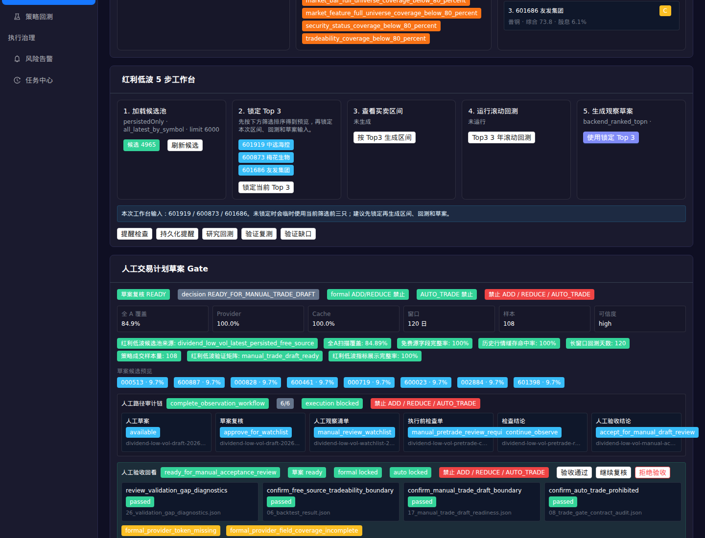
平板端红利低波
通过平板视口下验证红利低波页面可读性。
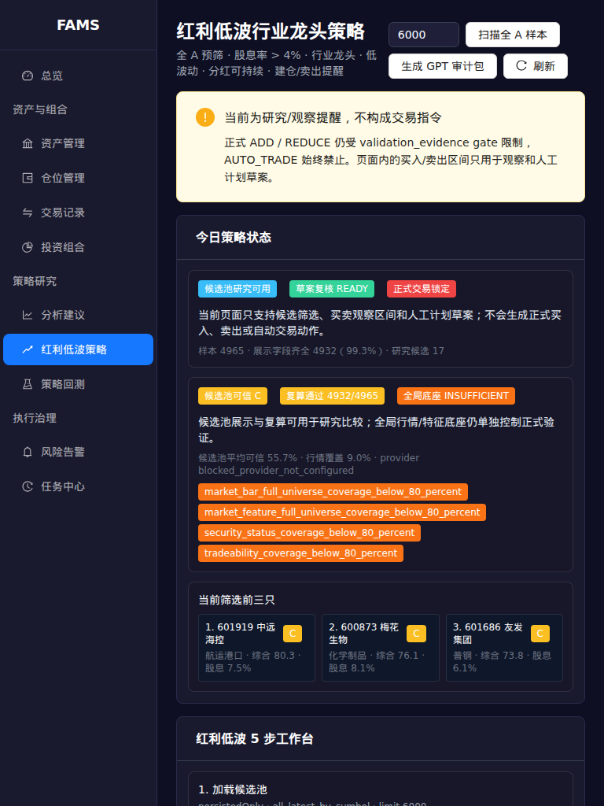
组合回测入口
通过组合回测参数和非交易建议 banner。
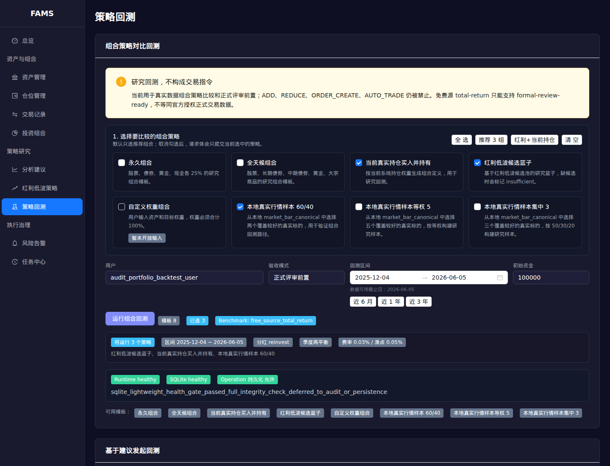
组合回测结果
通过组合净值曲线、收益指标、benchmark 和分红贡献。
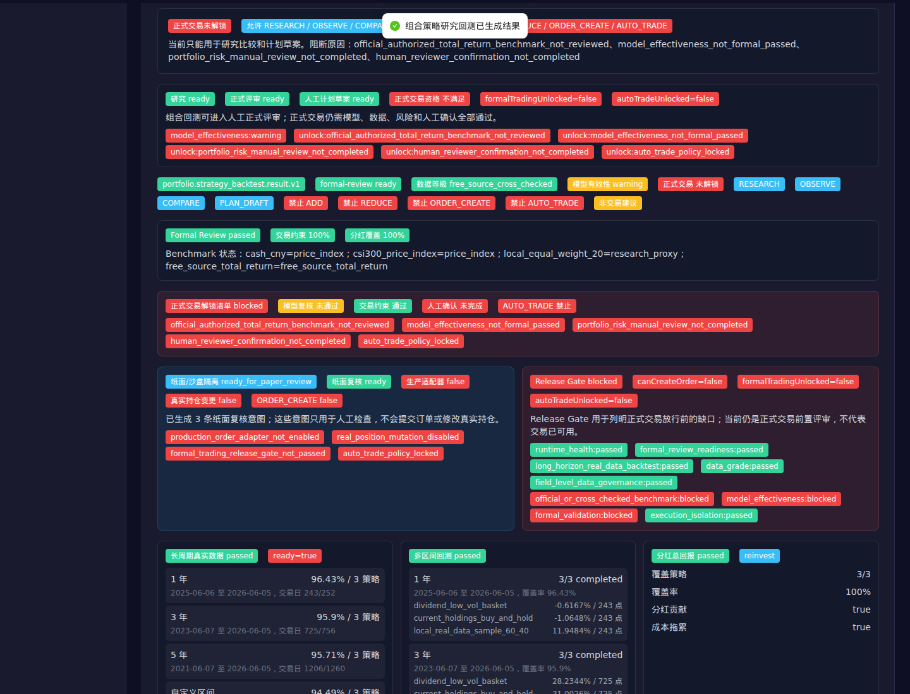
移动端组合回测
通过移动视口下验证组合回测结果仍可访问和阅读。
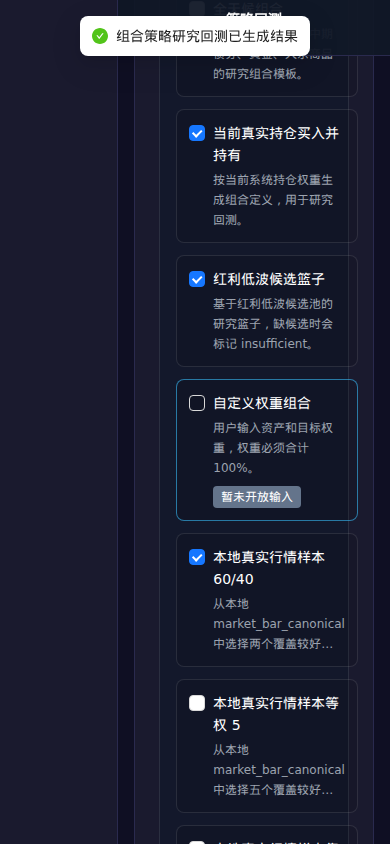
任务中心产物
通过任务中心 operation 与 artifact 可追溯。
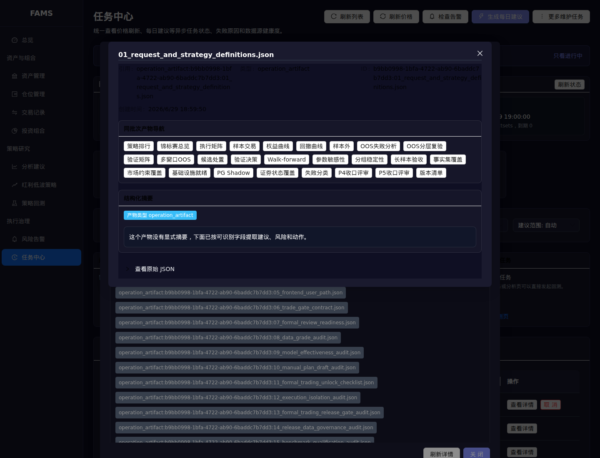
API 交叉验证
| 检查 | 状态 | 请求 | HTTP | 摘要 |
|---|---|---|---|---|
| 后端健康 | 通过 | GET http://127.0.0.1:4000/health |
200 | {
"status": "ok",
"database": "ok",
"operations": {
"runningOperations": 2,
"queuedOperations": 0,
"activeFivdRRefresh": null
}
} |
| 红利低波候选池 | 通过 | GET http://127.0.0.1:4000/api/v1/strategy/dividend-low-vol/candidates?limit=50&scope=all&persistedOnly=true |
200 | {
"schemaVersion": "dividend.low_vol.candidate_pool.v1",
"candidates": 50,
"completeness": {
"schemaVersion": "dividend.low_vol.metric_completeness_summary.v1",
"total": 50,
"completeDisplayReadyCount": 50,
"incompleteDisplayCount": 0,
"completenessPercent": 100,
"topMissingMetrics": [],
"note": "Main frontend strategy table should only display completeDisplayReady rows. Incomplete rows remain available through audit summaries, not as filled strategy metrics."
}
} |
| 红利低波 V2 研究验证 | 通过 | GET http://127.0.0.1:4000/api/v1/strategy/dividend-low-vol/v2/research-validation |
200 | {
"status": "research_candidate_passed",
"usableForTradingAdvice": false,
"prohibitedActions": [
"ADD",
"REDUCE",
"AUTO_TRADE"
],
"artifactRef": {
"path": "/mnt/c/workspace/financial-asset-manager/backend/data/gpt-audit/dividend-low-vol-v2-research-validation-2026-06-11T08-06-50-078Z.json",
"fileName": "dividend-low-vol-v2-research-validation-2026-06-11T08-06-50-078Z.json"
}
} |
| 组合回测模板 | 通过 | GET http://127.0.0.1:4000/api/v1/portfolio-backtest/templates |
200 | {
"templates": [
"permanent_portfolio",
"all_weather",
"current_holdings_buy_and_hold",
"dividend_low_vol_basket",
"custom_weight_portfolio",
"local_real_data_sample_60_40",
"local_real_data_equal_weight_5",
"local_real_data_concentrated_3"
],
"prohibitedActions": [
"ADD",
"REDUCE",
"ORDER_CREATE",
"AUTO_TRADE"
],
"notTradingAdvice": true
} |
| 组合回测 API | 通过 | POST http://127.0.0.1:4000/api/v1/portfolio-backtest/run |
200 | {
"operationId": "b9bb0998-1bfa-4722-ab90-6baddc7b7dd3",
"status": "completed",
"artifactCount": 20,
"firstArtifactRef": "operation_artifact:b9bb0998-1bfa-4722-ab90-6baddc7b7dd3:01_request_and_strategy_definitions.json",
"prohibitedActions": [
"ADD",
"REDUCE",
"ORDER_CREATE",
"AUTO_TRADE"
],
"strategyStatuses": [
{
"strategyId": "local_real_data_sample_60_40",
"status": "completed",
"curvePoints": 120,
"totalReturnPercent": -2.2467,
"dividendContributionPercent": 1.0019
},
{
"strategyId": "permanent_portfolio",
"status": "completed",
"curvePoints": 120,
"totalReturnPercent": 1.1098,
"dividendContributionPercent": null
},
{
"strategyId": "all_weather",
"status": "completed",
"curvePoints": 120,
"totalReturnPercent": 2.1916,
"dividendContributionPercent": null
}
]
} |
自动化命令证据
| 命令 | 状态 | 执行 | 耗时 | 输出 |
|---|---|---|---|---|
| typescript | 通过 | backend$ node node_modules/typescript/bin/tsc |
5969ms | |
| sqlite health | 通过 | backend$ npm run check:sqlite-health |
43348ms | stderr(node:159889) ExperimentalWarning: SQLite is an experimental feature and might change at any time (Use `node --trace-warnings ...` to show where the warning was created) stdout
> fams-backend@0.1.0 check:sqlite-health
> node node_modules/tsx/dist/cli.mjs scripts/check-sqlite-health.ts
{
"ok": true,
"status": "healthy",
"path": "/mnt/c/workspace/financial-asset-manager/backend/data/gpt-audit/dividend-low-vol/2026-06-29T10-56-16-380Z/11_runtime_health_audit.json",
"sqliteHealthy": true,
"strict": false
}
|
| dividend low vol api | 通过 | backend$ npm run test:dividend-low-vol-api |
48203ms | stdout
> fams-backend@0.1.0 test:dividend-low-vol-api
> node node_modules/tsx/dist/cli.mjs scripts/verify-dividend-low-vol-api.ts
{
"ok": true,
"scan": {
"total": 2,
"topDisposition": "low_zone_alert",
"prohibitedActions": [
"ADD",
"REDUCE",
"AUTO_TRADE"
]
},
"persisted": {
"rows": 2,
"total": 1,
"source": {
"persisted": true
}
},
"candidates": {
"total": 2,
"dispositions": [
"avoid",
"avoid"
],
"prohibitedActions": [
[
"ADD",
"REDUCE",
"AUTO_TRADE"
],
[
"ADD",
"REDUCE",
"AUTO_TRADE"
]
]
},
"allA": {
"universeTotal": 5849,
"selectedCount": 8,
"total": 8,
"alertSummary": {
"lowZoneCount": 1,
"buildPlanCount": 0,
"highZoneCount": 1,
"sellAlertCount": 1,
"buildPlanSymbols": [],
...
"persistedAlerts": {
"totalAlerts": 0
},
"history": {
"rows": 1
},
"backtest": {
"status": "completed",
"tradingDays": 160,
"validationStatus": "candidate_ready_for_validation",
"benchmark": "free_source_total_return",
"estimatedCostDragPercent": 1.4
},
"validationRetest": {
"status": "insufficient",
"artifact": "dividend-low-vol-validation-retest-2026-06-29T10-57-03-251Z.json",
"prohibitedActions": [
"ADD",
"REDUCE",
"AUTO_TRADE"
]
},
"validationGapDiagnostics": {
"status": "research_validation_gap_clear_manual_acceptance_required",
"gaps": 2,
"blockers": 0
},
"fivdR": {
"candidates": 1,
"prohibitedActions": [
"ADD",
"REDUCE",
"AUTO_TRADE"
]
},
"audit": {
"fileName": "dividend-low-vol-gpt-audit-2026-06-29T10-57-04-528Z.json",
"candidateCount": 0
}
}
|
| dividend low vol audit package | 通过 | backend$ npm run test:dividend-low-vol-audit-package |
59009ms | stdout
> fams-backend@0.1.0 test:dividend-low-vol-audit-package
> node node_modules/tsx/dist/cli.mjs scripts/verify-dividend-low-vol-audit-package.ts
{
"ok": true,
"rejectionTypes": {
"data_gap": 1,
"hard_rule_failure": 5,
"risk_flag": 4,
"validation_blocker": 0
},
"health": {
"status": "healthy",
"path": "/mnt/c/workspace/financial-asset-manager/backend/data/gpt-audit/dividend-low-vol/2026-06-29T10-57-48-009Z/11_runtime_health_audit.json"
},
"package": {
"path": "/mnt/c/workspace/financial-asset-manager/backend/data/gpt-audit/dividend-low-vol/2026-06-29T10-57-49-190Z",
"fileCount": 42,
"candidateSource": "latest_persisted"
}
}
|
| dividend low vol rolling backtest | 通过 | backend$ npm run test:dividend-low-vol-rolling-backtest |
731ms | stdout
> fams-backend@0.1.0 test:dividend-low-vol-rolling-backtest
> node node_modules/tsx/dist/cli.mjs scripts/verify-dividend-low-vol-rolling-backtest.ts
{
"ok": true,
"tradingZones": 3,
"rollingBacktest": {
"status": "completed",
"conclusion": {
"bestStrategyId": "dividend_low_vol_yield_ma_reversion_v1",
"researchPassed": true,
"reason": "Best research model is 股息率分位+长期均线模型; winRate=75%, totalReturn=54.54%, formal actions remain locked."
},
"strategyResults": [
{
"label": "布林低吸高抛模型",
"status": "completed",
"tradeCount": 18,
"winRatePercent": 0,
"totalReturnPercent": -87.59,
"maxDrawdownPercent": -87.59,
"prohibitedActions": [
"ADD",
"REDUCE",
"AUTO_TRADE"
]
},
{
"label": "股息率分位+长期均线模型",
"status": "completed",
"tradeCount": 12,
"winRatePercent": 75,
"totalReturnPercent": 54.54,
"maxDrawdownPercent": -10.63,
"prohibitedActions": [
"ADD",
"REDUCE",
"AUTO_TRADE"
]
}
]
}
}
|
| dividend low vol validation retest | 通过 | backend$ npm run test:dividend-low-vol-validation-retest |
704ms | stdout
> fams-backend@0.1.0 test:dividend-low-vol-validation-retest
> node node_modules/tsx/dist/cli.mjs scripts/verify-dividend-low-vol-validation-retest.ts
{
"ok": true,
"status": "insufficient",
"matrixStatus": "insufficient",
"completeTotalReturnGate": "passed",
"primaryBlocker": "dividend_low_vol_validation_insufficient",
"prohibitedActions": [
"ADD",
"REDUCE",
"AUTO_TRADE"
],
"artifact": "dividend-low-vol-validation-retest-contract_fixture-2026-06-29T10-58-04-982Z.json"
}
|
| dividend low vol frontend runtime | 通过 | backend$ npm run test:dividend-low-vol-frontend-runtime |
591ms | stdout
> fams-backend@0.1.0 test:dividend-low-vol-frontend-runtime
> node node_modules/tsx/dist/cli.mjs scripts/verify-dividend-low-vol-frontend-runtime.ts
{
"ok": true,
"auditPath": "/mnt/c/workspace/financial-asset-manager/backend/data/gpt-audit/dividend-low-vol-frontend-runtime-contract-2026-06-29T10-58-05-623Z.json",
"checks": {
"defaultAllALimit6000": true,
"pageUsesPersistedOnlyAllScope": true,
"pageLoadsV2ResearchValidation": true,
"pageLoadsManualDraftReadiness": true,
"pageLoadsManualTradeDraft": true,
"pageLoadsManualWatchlist": true,
"pageLoadsManualWorkflowAudit": true,
"pageCreatesManualTradeDraft": true,
"pageUsesCurrentFilteredTop3ForDraft": true,
"pageLocksActiveTop3Selection": true,
"pageUsesSameTop3ForTradingZones": true,
"pageUsesSameTop3ForRollingBacktest": true,
"pageShowsTop3InputScope": true,
"pageShowsFiveSt
...
eptanceDecisionEndpoint": true,
"serviceCanPersistManualAcceptanceDecision": true,
"serviceExposesValidationGapDiagnosticsEndpoint": true,
"serviceExposesTradingZoneEndpoint": true,
"servicePassesSymbolsForPersistedTradingZones": true,
"serviceExposesRollingBacktestEndpoint": true,
"serviceCanPersistManualTradeDraft": true,
"serviceCanReviewManualTradeDraft": true,
"leftMenuHasIndependentEntry": true,
"appRouteHasIndependentPage": true,
"backendFiltersPersistedTradingZonesBySymbols": true,
"v2ArtifactResearchOnly": true
},
"v2ResearchValidation": {
"artifactFileName": "dividend-low-vol-v2-research-validation-2026-06-11T08-06-50-078Z.json",
"status": "research_candidate_passed",
"v2ResearchCandidates": 109,
"usableForTradingAdvice": false,
"prohibitedActions": [
"ADD",
"REDUCE",
"AUTO_TRADE"
]
}
}
|
| fivd-r core | 通过 | backend$ npm run test:fivd-r-core |
1993ms | stdout
> fams-backend@0.1.0 test:fivd-r-core
> node node_modules/tsx/dist/cli.mjs scripts/verify-fivd-r-core.ts
{
"ok": true,
"contractStatus": "blocked",
"contractBlockedReasons": [
"asset_identity_missing",
"position_context_missing"
],
"positionChecked": false,
"validationSource": "fivd_r_internal_validation_tournament"
}
|
| fivd-r trade gate contract | 通过 | backend$ npm run test:fivd-r-trade-gate-contract |
2012ms | stdout
> fams-backend@0.1.0 test:fivd-r-trade-gate-contract
> node node_modules/tsx/dist/cli.mjs scripts/verify-fivd-r-trade-gate-contract.ts
{
"ok": true,
"portfolioCapabilityState": "DATA_INSUFFICIENT",
"portfolioBlockedReasons": [],
"dataGapSummaryCount": 0,
"position": {
"skipped": true
},
"candidateCount": 5,
"candidateTop": [
{
"symbol": "000001",
"signalScore": 71,
"researchScore": 69,
"evidenceAdjustedScore": 69,
"disposition": "needs_more_evidence",
"prohibitedActions": [
"AUTO_TRADE"
]
},
{
"symbol": "601127",
"signalScore": 74,
"researchScore": 67,
"evidenceAdjustedScore": 13,
"disposition": "needs_more_evidence",
"prohibitedActions": [
"AUTO_TRADE"
]
},
{
"symbol": "300750",
"signalScore": 71,
"researchScore": 65,
"evidenceAdjustedScore": 13,
"disposition": "needs_more_evidence",
"prohibitedActions": [
"AUTO_TRADE"
]
}
],
"manualTradeDraftStatus": "blocked"
}
|
| portfolio strategy backtest | 通过 | backend$ npm run test:portfolio-strategy-backtest |
5845ms | stdout
> fams-backend@0.1.0 test:portfolio-strategy-backtest
> node node_modules/tsx/dist/cli.mjs scripts/verify-portfolio-strategy-backtest.ts
{
"ok": true,
"userId": "default",
"openPositionCount": 0,
"schemaVersion": "portfolio.strategy_backtest.input.v1",
"dataQuality": {
"status": "partial",
"strategyCount": 6,
"validStrategyCount": 4,
"blockedReasons": [
"current_holdings_buy_and_hold:current_holdings_missing",
"current_holdings_buy_and_hold:current_holdings_market_value_missing",
"custom_invalid_80:weight_sum_not_100:80"
],
"warnings": [
"permanent_portfolio:proxy_market_data_coverage_status:ready",
"all_weather:proxy_market_data_coverage_status:ready",
"dividend_low_vol_basket:dividend_low_vol_basket_is_research_only_not_formal_trade_signal",
"dividend_low_vol_basket:dividend_low_vol_component_price_history_be
...
219,
"status": "completed",
"metrics": {
"totalReturnPercent": 56.6775,
"priceOnlyReturnPercent": 56.6775,
"annualizedReturnPercent": 14.3905,
"maxDrawdownPercent": -25.7784,
"volatilityPercent": 16.1331,
"sharpe": 0.892,
"calmar": 0.5582,
"monthlyWinRate": 100,
"turnoverRate": 209.3572,
"dividendContributionPercent": 10.1777,
"capitalGainContributionPercent": 46.4998,
"costDragPercent": 0.1675,
"benchmarkReturnPercent": 0,
"excessReturnPercent": 56.6775
},
"dataCoverage": {
"priceCoveragePercent": 96.14,
"dividendCoveragePercent": 100,
"benchmarkCoveragePercent": 100,
"missingSymbols": []
},
"blockedReasons": [],
"warnings": [
"benchmark_status:cash_cny:price_index",
"dividend_contribution_estimated_from_ttm_yield_research_only"
]
}
}
|
| portfolio backtest API contract | 通过 | backend$ npm run test:portfolio-backtest-api-contract |
17115ms | stdout
> fams-backend@0.1.0 test:portfolio-backtest-api-contract
> node node_modules/tsx/dist/cli.mjs scripts/verify-portfolio-backtest-api-contract.ts
{
"ok": true,
"templates": 8,
"strategyStatuses": [
{
"strategyId": "local_real_data_sample_60_40",
"status": "completed",
"curvePoints": 120,
"blockedReasons": [],
"warnings": [
"local_real_data_sample_is_for_path_validation_not_recommendation",
"csi300_price_index_is_price_index_not_total_return_benchmark",
"local_equal_weight_20_is_research_proxy_not_formal_benchmark",
"benchmark_status:cash_cny:price_index",
"benchmark_status:csi300_price_index:price_index",
"benchmark_status:local_equal_weight_20:research_proxy",
"dividend_contribution_estimated_from_ttm_yield_research_only"
]
},
{
"strategyId": "local_real_data_equal_weight
...
ts": 120,
"blockedReasons": [],
"warnings": [
"proxy_market_data_coverage_status:ready",
"csi300_price_index_is_price_index_not_total_return_benchmark",
"local_equal_weight_20_is_research_proxy_not_formal_benchmark",
"benchmark_status:cash_cny:price_index",
"benchmark_status:csi300_price_index:price_index",
"benchmark_status:local_equal_weight_20:research_proxy",
"dividend_contribution_insufficient:no_audited_component_yield"
]
},
{
"strategyId": "current_holdings_buy_and_hold",
"status": "insufficient",
"curvePoints": 0,
"blockedReasons": [
"current_holdings_missing",
"current_holdings_market_value_missing"
],
"warnings": []
}
],
"prohibitedActions": [
"ADD",
"REDUCE",
"ORDER_CREATE",
"AUTO_TRADE"
],
"notTradingAdvice": true
}
|
| production readiness | 通过 | backend$ npm run test:production-readiness |
1938ms | stdout
> fams-backend@0.1.0 test:production-readiness
> node node_modules/tsx/dist/cli.mjs scripts/verify-production-readiness.ts
{
"schemaVersion": "fams.production_readiness_check.v1",
"generatedAt": "2026-06-29T10:58:34.528Z",
"analysisAdviceReady": true,
"tradeActionReady": true,
"productionReady": true,
"strict": false,
"strictTrade": false,
"symbols": [
"000001",
"600000"
],
"environment": {
"postgresShadowConfigured": true,
"postgresShadowStatus": "ready",
"postgresClientTool": "psql_missing",
"tushareConfigured": false
},
"gates": [
{
"id": "postgres_shadow_ready",
"status": "passed",
"message": "PostgreSQL shadow schema/staging/smoke 验证通过。"
},
{
"id": "free_source_security_coverage",
"status": "passed",
"message": "免费源证券状态覆盖可用于分析建议：status=2, tradeability=2。"
},
{
"id": "tusha
...
"bestSampleSize": 108,
"bestCredibility": "high",
"blockerGateIds": []
},
"gates": [
{
"id": "full_a_strategy_evidence",
"status": "passed",
"message": "全 A 证据达标：coverage=84.89%，窗口=120日，样本=108，可信度=high。"
},
{
"id": "validation_evidence",
"status": "passed",
"message": "样本外、walk-forward、参数敏感性和分组稳定性已支持进入人工交易计划复核。"
},
{
"id": "factset_coverage",
"status": "passed",
"message": "事实集覆盖可支撑分组审计。"
},
{
"id": "manual_execution_review",
"status": "warning",
"message": "即使交易动作 gate 通过，也只允许进入人工确认交易计划草案；自动交易不开放。"
}
],
"blockerGateIds": [],
"nextActions": [
"进入人工确认交易计划草案；执行前复核停复牌、涨跌停和持仓约束。"
]
},
"nextActions": [
"可选：配置 FAMS_TUSHARE_TOKEN / TUSHARE_TOKEN 作为正式交易状态增强源。",
"交易动作已可进入人工确认交易计划草案；自动交易仍禁止。"
]
}
|
| trade action readiness | 通过 | backend$ npm run test:trade-action-readiness |
1907ms | stdout
> fams-backend@0.1.0 test:trade-action-readiness
> node node_modules/tsx/dist/cli.mjs scripts/verify-production-readiness.ts --strict-trade
{
"schemaVersion": "fams.production_readiness_check.v1",
"generatedAt": "2026-06-29T10:58:36.434Z",
"analysisAdviceReady": true,
"tradeActionReady": true,
"productionReady": true,
"strict": false,
"strictTrade": true,
"symbols": [
"000001",
"600000"
],
"environment": {
"postgresShadowConfigured": true,
"postgresShadowStatus": "ready",
"postgresClientTool": "psql_missing",
"tushareConfigured": false
},
"gates": [
{
"id": "postgres_shadow_ready",
"status": "passed",
"message": "PostgreSQL shadow schema/staging/smoke 验证通过。"
},
{
"id": "free_source_security_coverage",
"status": "passed",
"message": "免费源证券状态覆盖可用于分析建议：status=2, tradeability=2。"
},
{
...
"bestSampleSize": 108,
"bestCredibility": "high",
"blockerGateIds": []
},
"gates": [
{
"id": "full_a_strategy_evidence",
"status": "passed",
"message": "全 A 证据达标：coverage=84.89%，窗口=120日，样本=108，可信度=high。"
},
{
"id": "validation_evidence",
"status": "passed",
"message": "样本外、walk-forward、参数敏感性和分组稳定性已支持进入人工交易计划复核。"
},
{
"id": "factset_coverage",
"status": "passed",
"message": "事实集覆盖可支撑分组审计。"
},
{
"id": "manual_execution_review",
"status": "warning",
"message": "即使交易动作 gate 通过，也只允许进入人工确认交易计划草案；自动交易不开放。"
}
],
"blockerGateIds": [],
"nextActions": [
"进入人工确认交易计划草案；执行前复核停复牌、涨跌停和持仓约束。"
]
},
"nextActions": [
"可选：配置 FAMS_TUSHARE_TOKEN / TUSHARE_TOKEN 作为正式交易状态增强源。",
"交易动作已可进入人工确认交易计划草案；自动交易仍禁止。"
]
}
|
| frontend build | 通过 | frontend$ npm run build |
43719ms | stderr(!) Some chunks are larger than 500 kB after minification. Consider: - Using dynamic import() to code-split the application - Use build.rollupOptions.output.manualChunks to improve chunking: https://rollupjs.org/configuration-options/#output-manualchunks - Adjust chunk size limit for this warning via build.chunkSizeWarningLimit. stdout> fams-frontend@0.1.0 build > node node_modules/typescript/bin/tsc && node node_modules/vite/bin/vite.js build vite v5.4.21 building for production... transforming... ✓ 3715 modules transformed. rendering chunks... computing gzip size... dist/index.html 0.71 kB │ gzip: 0.41 kB dist/assets/index-CftMvBLq.css 30.02 kB │ gzip: 6.59 kB dist/assets/api-Bq0ki--Q.js 0.09 kB │ gzip: 0.11 kB │ map: 0.23 kB dist/assets/Portfolios-C5ZrCANk.js 0.92 kB │ gzip: 0.47 kB │ map: 1.74 kB dist/assets/chartTheme-C7a2iQKl.js 1.29 kB │ gzip: 0.58 kB │ map: 4.80 kB dist/assets/RefreshFailureTable-DZz3RX6g.js 1.37 kB │ gzip: 0.98 kB │ map: 4.90 kB dist/assets/ReliabilityWarnings-BnA12rXC.js 1.37 kB │ gzip: 0.78 kB │ map: 4.53 kB dist/assets/GoldWei ... 31.91 kB dist/assets/vendor-utils-CsZ8kA4A.js 52.73 kB │ gzip: 20.80 kB │ map: 222.16 kB dist/assets/DividendLowVol-Bt9Y-N15.js 79.77 kB │ gzip: 20.70 kB │ map: 206.01 kB dist/assets/vendor-table-BgUKEX9O.js 92.04 kB │ gzip: 30.72 kB │ map: 431.07 kB dist/assets/Operations-BebAr5Fa.js 129.40 kB │ gzip: 29.25 kB │ map: 351.43 kB dist/assets/Analysis-BH4RtNie.js 155.98 kB │ gzip: 35.90 kB │ map: 403.91 kB dist/assets/vendor-react-Du4ebM-n.js 163.75 kB │ gzip: 53.26 kB │ map: 708.57 kB dist/assets/vendor-zrender-Bwfx8Sjs.js 219.93 kB │ gzip: 75.27 kB │ map: 1,025.44 kB dist/assets/vendor-echarts-core-Bs6ec-ON.js 826.36 kB │ gzip: 272.05 kB │ map: 4,834.35 kB dist/assets/vendor-antd-D6fYkZ0V.js 1,028.06 kB │ gzip: 321.62 kB │ map: 4,561.93 kB ✓ built in 29.03s |
限制与不通过项
- 报告仅使用无头浏览器截图，不抢占桌面焦点。
- 若免费数据源或本地缓存不是最新交易日，报告会保留数据新鲜度风险，不会声明每日实时保证。
- tradeActionReadiness 通过只代表 gate 行为正确，不代表策略可以自动交易。
- 若组合回测文档仍保留旧的 ETF proxy 阻塞描述，而 API 已通过，将作为文档漂移处理。
- 正式 total-return benchmark 与完整外部数据源仍需单独审计，不能因此报告直接解锁正式交易。